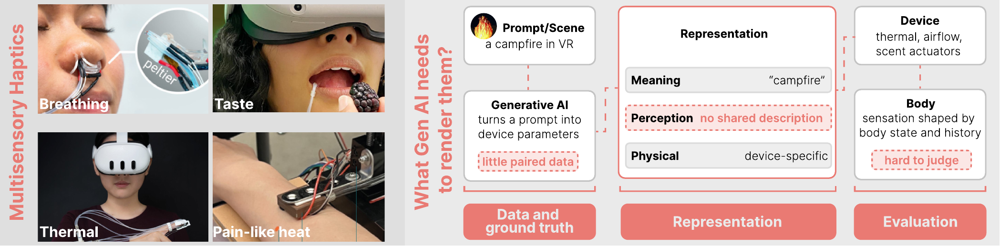

Representation
What would a representation that connects meaning, perception, and device parameters look like, and should it include the state of the body?
no shared descriptionA CHI 2027 workshop in Pittsburgh, May 2027
Representations, Data, and Evaluation for Generative AI in Multisensory Interfaces

This workshop brings together researchers in haptics, multisensory interaction, perception science, and machine learning to ask what generative AI needs to produce multisensory haptic experiences. While generative models can now render vibrotactile feedback, sensations such as temperature, pressure, smell, and taste still lack a shared representation, datasets that capture how people perceive them, and methods to evaluate generated output.
It is the second in a series that began with Haptics Beyond Vibration at UIST 2026.
What would a representation that connects meaning, perception, and device parameters look like, and should it include the state of the body?
no shared descriptionWhat should a multisensory data sample include, and how can we collect enough of them when every sample needs a person, a device, and time?
little paired dataHow do we know that a generated sensation is right when the real reference cannot be brought into the lab, or does not exist at all?
hard to judgeWe invite researchers and practitioners in haptics, multisensory interaction, perception science, machine learning, and related fields to submit a two- to four-page position paper, excluding references, in the ACM single-column format. With authors' consent, accepted papers will be posted on arXiv and linked from this page. At least one author of each accepted paper must attend in person.
The submission form opens in December 2026. Questions can go to znzhang@umd.edu.
The workshop runs as two sessions and expects 30 to 40 participants.
Every accepted author gives a short lightning talk. Participants then play sensation telephone, an exercise in which people and a generative model encode a sensation and try to reconstruct it from the encoding alone.
Small groups use what got lost in the exercise to discuss how to design representations, collect data, and evaluate generated sensations, and outline a representation schema, a reporting checklist, and an evaluation framework.